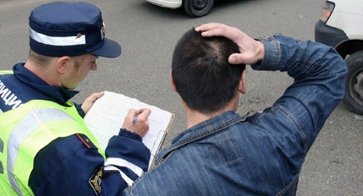
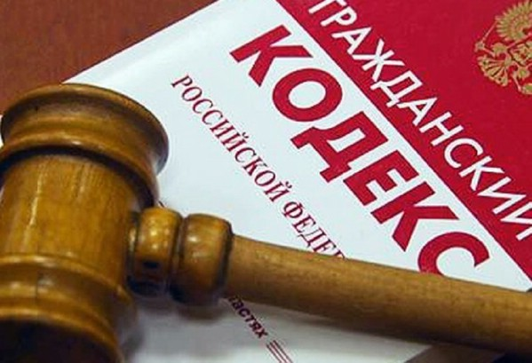
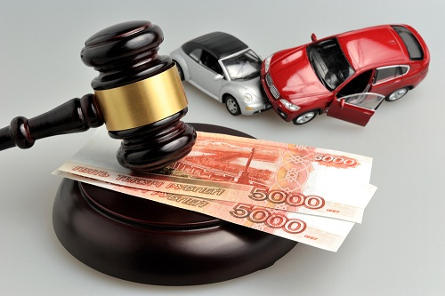

Любое ДТП может иметь следующие последствия:
-
Нарушение Правил ДД - влечет административную ответственность.
-
Причинение вреда здоровью потерпевшего - уголовная ответственность по ст. 264 УК РФ.
-
Причинение вреда имуществу потерпевшего - гражданская ответственность.
- Административная ответственность может заключаться в виде наказания от административного штрафа до лишения права управления транспортным средством и административного ареста.
- Уголовная ответственность возникает в случаях причинения тяжкого вреда здоровью потерпевшему, наказание до 9 лет лишения свободы.
- Гражданско-правовая ответственность возникает за причинение вреда потерпевшему.
Консультация юристов по ДТП
8 (925) 502-40-09
8 (925) 502-40-09
Наши Адвокаты по ДТП.
распологают значительным опытом ведения дел по ДТП - от возмещения вреда потерпевшему до уголовной защиты.

Симонов
Дмитрий Александрович

Дебердеев
Юнус Кяримович
Виды юридических услуг адвокатов по ДТП.

Административная ответственность.
Нередко, в результате столкновения, виновное лицо привлекается к административной ответственности.
В рамках административного расследования, виновное лицо может быть подвергнуто административному штрафу или лишению водительского удостоверения.
Помощь адвоката по ДТП по административным правонарушениям:
-
Адвокат участвует при рассмотрении административного дела в ГИБДД.
адвокат представит Ваши интересы по административному расследованию, заявит необходимые ходатайства;
-
Адвокат обжалует действия и решения ГИБДД.
обжалует незаконные решения ГИБДД в суд и прокуратуру;
Гражданско-правовая ответственность.
Гражданская ответственность выражена в возмещении причиненного вреда как потерпевшему, так и участнику ДТП.
Так же, при защите интересов потерпевшего нередко возникают вопросы о возмещении вреда, причиненного потерпевшему в результате ДТП. Это и не полученный заработок и компенсация материального вреда, компенсации расходов за лечение, компенсация морального вреда.
Так же возникают вопросы по выплатам на восстановлению поврежденного транспортного средства.

Услуги юриста и адвоката по ДТП при возмещении вреда имуществу и здоровью:
-
устная консультация
в ходе которого он дает пояснения по вопросам оформления последствий ДТП;
-
выезд к доверителю
выезд для анализа и изучения первичных документов с целью выработки стратегии защиты;
-
составление необходимых процессуальных документов
письменно сформулирует Ваши объяснения и законные требования;
-
составление искового заявления о возмещении вреда
грамотно составит и подаст иск в суд;
-
ведение дела в суде.
представительство в судебных процессах;
Страховая ответственность виновного в ДТП
На основании Закона Об ОСАГО, гражданская ответственность автовладельца застрахована.
Страховая компания страхует ответственность причинителя вреда перед третьими лицами в пределах лимита.

Помощь страхового адвоката по ОСАГО:
-
консультация по вопросам страхового случая
разъяснения о получении страхового возмещения
-
составление искового заявления или претензии о возмещении вреда при ДТП
сформулирует требования по возмещению ущерба к страховой компании
-
представительство интересов в суде по спору со страховой
представит Ваши интересы в суде против страховой компании
Уголовная ответственность по ст.264 УК РФ.
Вследствии ДТП может быть причинет тяжкий вред потерпевшему. Тогда уже последует уголовная ответственность водителя.
В этом случае уже не обойтись без адвоката, поскольку участие адвоката в уголовных делах обязательна.
Помощь уголовного адвоката по ДТП.
-
защита на стадии следствия
-
помощь в определении вопросов для автотехнической экспертизы
-
защита обвиняемого по ДТП в суде
Стоимость услуг адвокатов по ДТП в Москве.
Другие услуги юристов по ДТП.
Услуги Адвокатов по ДТП.
8 (925)502-40-09
Защита по ДТП: как сохранить права, свободу и имущество — держите рядом опытного юриста.
ДТП — стрессовая ситуация, когда от правильных шагов в первые часы зависит не только ваше спокойствие, но и судьба прав, свободы и финансов. Ошибка при общении с сотрудниками ГИБДД, неверно оформленные документы или неверные выводы экспертов могут привести к лишению прав, крупным штрафам и уголовному делу. Мы помогаем водителям и потерпевшим быстро и профессионально защитить их интересы — от первичной консультации до полного сопровождения в суде.
Кому нужна профессиональная защита?
- Водителям, обвиняемым в нарушениях, повлёкших вред здоровью или смерть.
- Участникам ДТП, с которыми спорят о виновнике.
- Пострадавшим в ДТП, которым задерживают выплату страховки или занижают сумму ущерба.
- Свидетелям и владельцам автомобилей, вовлечённых в разбирательства.
Какие риски при отсутствии профессиональной защиты?
- Неправильное оформление материалов дела и потеря доказательств.
- Ошибки при даче показаний, ухудшающие позицию в суде.
- Пониженная или отказанная выплата по ОСАГО/КАСКО.
- Возможное уголовное преследование или лишение водительских прав.
- Долгие суды и неоправданные расходы.
Что мы делаем: полный набор юридических услуг
ЭКСТРЕННОЕ сопровождение по вопросам ДТП
- консультация по первичным действиям и документам;
- помощь в фиксации места происшествия, сборе контактов свидетелей, фото/видео доказательств.
Работа с правоохранительными органами
- участие при опросах и объяснениях;
- защита ваших прав при составлении протоколов;
- обжалование действий сотрудников ГИБДД.
Независимая экспертиза и восстановление доказательственной базы
- организация криминалистических, автотехнических и медицинских экспертиз;
- анализ и опротестование выводов официальных экспертов.
Взаимодействие со страховыми компаниями
- подготовка обоснованных претензий;
- ведение переговоров о полной и своевременной выплате;
- судебная защита при отказе или занижении возмещения.
Судебное представительство
- составление исковых заявлений и жалоб;
- защита в суде по гражданским и уголовным делам;
- обжалование решений в апелляции и кассации.
Почему выбирают нас
- Практика в области ДТП: мы знаем, какие доказательства решают исход дела.
- Комплексный подход: от сцены аварии до окончательного решения в суде.
- Индивидуальная стратегия: защита под конкретную ситуацию клиента.
- Конфиденциальность и оперативность — реагируем 24/7.
- Чёткое ценообразование: предварительная оценка стоимости услуг, варианты оплаты.
Чем мы реально помогаем (конкретные результаты)
- Снижение рисков уголовного преследования и смягчение наказания.
- Сохранение водительских прав или минимизация срока лишения.
- Добивание справедливой компенсации за ремонт и лечение.
- Сокращение времени и нервов при взаимодействии с ГИБДД и страховыми.
Типичный план действий при обращении к нам
1. Быстрая оценка ситуации по телефону — бесплатно.
2. Выезд юриста/онлайн-консультация и сбор первичных данных.
3. Формирование стратегии защиты и смета работ.
4. Проведение экспертиз, взаимодействие со следствием и страховщиками.
5. Представительство в суде и исполнение решения.
Часто задаваемые вопросы
- Нужно ли нанимать юриста сразу после ДТП?
Да. Правильные первичные действия и фиксация доказательств существенно повышают шансы на успешную защиту.
- Гарантируете ли вы выигрыш?
Никакая солидная юридическая фирма не может гарантировать конкретного результата — мы гарантируем профессиональную работу и максимальные усилия для защиты ваших интересов.
- Какова стоимость услуг?
Зависит от сложности дела: возможны фиксированные пакеты (начальное сопровождение, подготовка к суду) и почасовая оплата. Первичная оценка — бесплатно.
Образцы документов
Судебная практика юристов по делам ДТП.
Прекращение уголовного преследования по ст. 264 УК.
К адвокату Коллегии обратился доверитель, которого подозревали в наезде со смертельным исходом, было возбуждено уголовное дело по ч. 4 ст.264 УК. Дело было примечательно необходимостью проведения сложной автотехнической экспертизы.
В результате правильно поставленных адвокатом вопросов для экспертизы, результаты заключения показали, что доверитель не мог избежать наезда на пешехода.
В итоге, органами предварительного следствия было вынесено постановление о прекращении уголовного дела.
Дело о возмещении вреда потерпевшему при ДТП.
В Коллегию обратился клиент с вопросом возмещения вреда, причиненного в результате ДТП. У виновника ДТП не имелось договора страхования ОСАГО. Был причинен средний вред здоровью, а также ущерб имуществу.
В результате направленного адвокатом в суд иска, было вынесено решение о взыскании с виновника ДТП компенсации причиненного имуществу вреда в размере 500 тыс руб и вреда здоровью в размере 350 000 руб. Решение оспорено ответчиком не было.